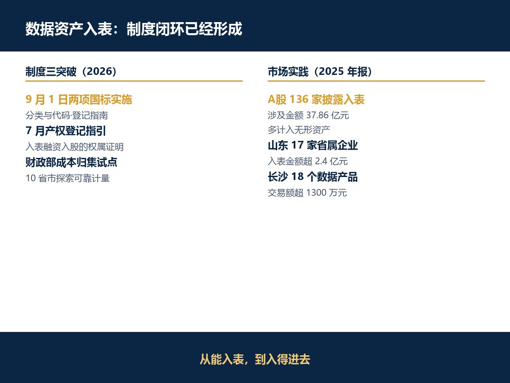

数据资产入表正在越过概念普及期，进入制度与实操相互验证的新阶段。2026 年 9 月 1 日起，两项数据资产领域国家标准实施；同年 7 月，《数据产权登记工作指引（试行）》推动数据产权登记有了更明确的操作依据。与此同时，A 股已有 136 家公司在年报中披露数据资源入表，涉及金额约 37.86 亿元。规则、登记、会计处理和市场实践开始形成闭环，企业真正需要面对的问题，也从“数据能不能成为资产”，变成“权属是否清楚、成本能否归集、价值能否被信任”。

一、事实层面：制度、登记与入表实践同步推进
制度端的变化最为关键。两项国家标准围绕数据资产分类与代码、登记要求等基础规则展开，解决的是“什么样的数据可以被识别、怎样被描述、如何进入登记和管理流程”的问题。数据产权登记指引则进一步回应权属确认与凭证效力，为数据资产后续入表、融资、入股、交易提供基础证明。
会计端也在形成可操作路径。财政部相关试点推动数据资源成本归集和会计处理规范化，多地开始探索数据资源可靠计量的方法。过去企业谈数据价值，更多停留在业务叙事；现在必须回答哪些支出属于可资本化成本，哪些数据资源符合条件，后续摊销和减值如何安排。
市场端已有可见样本。公开统计显示，A 股 136 家公司披露数据资源入表，涉及金额约 37.86 亿元，多数计入无形资产或相关资产科目。山东 17 家省属企业入表金额超过 2.4 亿元，长沙 18 个数据产品交易额超过 1300 万元。这些数字不算巨大，却说明数据资源已经开始从“管理对象”走向“财务对象”和“交易对象”。
二、深层变化：不是加一个会计科目，而是重做数据治理
数据资产入表最容易出现的误解，是把它看成财务部门的工作。实际上，能否入表取决于企业此前有没有把数据来源、权属边界、加工过程、质量状态和使用场景记录清楚。如果数据台账不完整，成本无法追溯，授权链条不清，财务端就算想确认，也缺少可靠依据。
第一道门槛是权属。企业持有的数据，究竟来自自主采集、客户授权、公共数据加工，还是第三方采购？不同来源对应不同权利边界。没有清晰授权，数据再热闹也不能简单视为企业资产。
第二道门槛是计量。数据资源具有可复制、可复用、价值随场景变化的特点，传统资产计量方法并不能照搬。成本法、收益法、市场法各有适用条件，难点不在于算一个数字，而在于这个数字是否能被审计、被交易对手认可。
第三道门槛是收益确定性。数据资产能否带来经济利益流入，取决于是否有清晰产品、稳定客户和可持续场景。只有报表上的数字，没有业务端的现金流，数据入表就可能变成一次性账面动作。
三、客户场景：四类主体需要不同抓手
对国有企业与平台公司而言，重点是把公共数据授权运营、数据产品开发与资产登记串起来。先建立数据资源目录，再明确授权来源、加工边界和产品形态，最后对接会计确认与交易场景，避免“先估值、后补权属”。
对科技企业与互联网平台而言，重点是数据治理与成本归集同步。研发、采集、清洗、标注、建模等环节，哪些形成可识别的数据资源，哪些只是日常经营费用，需要在项目管理和财务系统中提前留痕。
对高校与科研机构而言，重点是把科研数据、实验数据和行业数据库纳入规范管理。科研数据是否可开放、可授权、可转化，关系到成果转化和产学研合作的质量。研究院在服务数字经济客户时，也应把数据资产盘点、权属梳理和场景设计作为前置工作。
对金融机构与投资机构而言，重点是建立识别能力。数据资产能否用于质押融资、增资入股或作为增信材料，不能只看评估报告，还要看登记凭证、权属链条、数据质量和变现路径。
四、趋势判断：从入表数量走向资产质量
其一，登记将成为入表前的标准动作。随着数据产权登记规则完善，未来企业披露数据资源时，权属证明和登记凭证会被更频繁地要求，登记数据与财务数据之间的对应关系也会更受关注。
其二，披露将从先行样本走向常态。当前披露入表的公司仍是少数，但随着会计准则应用成熟和监管问询增加，拥有大规模数据资源的企业会更主动披露，数据资源信息可能成为年报中的常规观察项。
其三，数据资产融资会更重视现金流。短期看，入表有助于企业展示资源基础；中长期看，真正决定融资价值的，是数据产品是否持续销售、客户是否复购、成本与收益能否匹配。
其四，区域数据要素市场会走向专业化分工。登记、评估、审计、交易、金融各环节将出现更清晰的服务链。大湾区如果能在跨境数据合规、行业数据空间和产业场景中形成协同，数据资产化会更贴近实体经济需求。
结语
数据资产入表的意义，不在于让企业多一个资产科目，而在于倒逼企业把数据从“散落在系统里的资源”整理成“权属清楚、质量可控、场景明确、价值可解释”的经营要素。制度闭环已经形成，下一阶段的胜负手在执行。谁能先把数据治理做扎实，谁就更可能在数据要素市场中获得融资、交易与产业协同的主动权。
本文所引数据与政策信息来自公开报道和公开文件，具体分析为行业趋势研判，不构成会计、审计、投资或融资建议；实际处理应以财政部门、监管机构及专业机构意见为准。